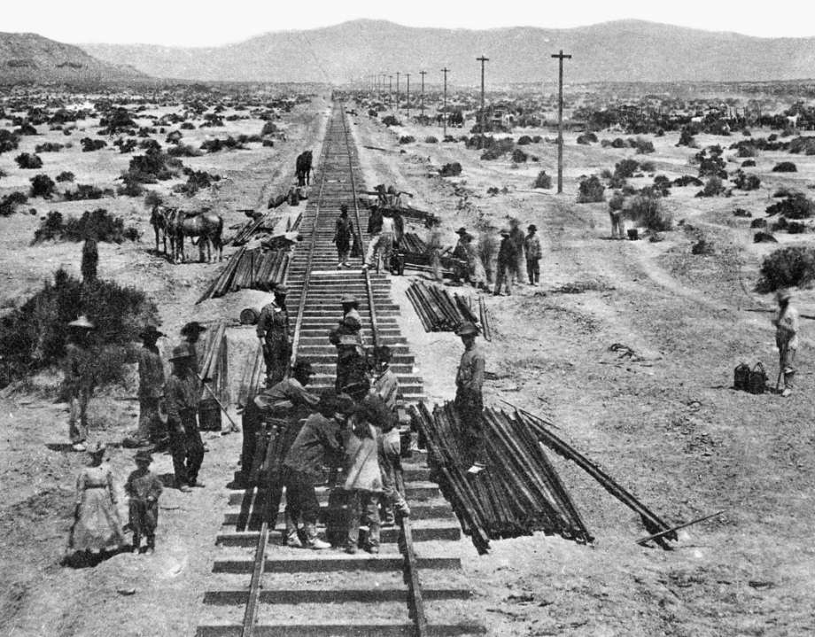
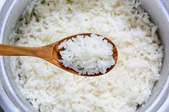

El arroz 3 delicias por raro que suene no es un plato Chino, ya que damos por hecho, que es una comida tradicional China las provenientes de varias regiones: (Jiang-Huai, Guangdong, Chaozhou, Hakka, Hunan, Shanghai, Sichuan, Fujian, etc.), sino que fue el resultado de una terrible etapa que vivieron los chinos construyendo el ferrocarril
transcontinental americano, ya que en la elaboración de este, murieron de frío y hambre miles de chinos.

En la supervivencia de los chinos, lo que hacían para no morir de hambre era buscar en los restos de las comidas de los irlandeses y mormones, y tras esto, nacieron los
rollitos de primavera, los chop sueys y el Arroz Tres Delicias.
La receta como tal del Arroz 3 delicias, de si lleva gambas, guisantes etc, es una tontería ya que la historia del arroz 3 delicias es que los chinos cobraban un plato de
arroz por el trabajo y lo que llevaba este arroz era lo que encontrasen para llenarlo de sabor.
Se lava bien el arroz para limpiarlo de impurezas y exceso de almidón, y se deja reposar media hora.
Luego se pone a cocer en un cazo con un poco de sal yel mismo volumen de agua que de arroz.
El tiempo depende de la intensidad calorífica del fuego, de la calidad del agua, del arroz, hasta de la presión atmosférica.

Cuando rompe a hervir el agua, se remueve bien y ya se deja hasta que se consume.
Se hacen unos agujeritos en la superficie.
Despues, se retira y se vuelca sobre un mármol frío.
Se puede llegar a abanicar hasta que deja de humear para detener su cocción y que quede el grano bien terso.
Mientras se enfría, en una sartén ponemos a dorar la cebolla cortada en aritos y el jamón en tiritas, debe hacerse a fuego fuerte para que se dore pronto,
incluso si fuese posible, sin terminar de hacerse.
Cuando tiene color, se añade la zanahoria rallada y la latita de guisantes
Basta con rehogar un poco y añadimos el huevo.
Hay un truco oriental para este
tipo de forma de hacer el huevo que consiste en batirlo con un poco de agua, así se alarga su rendimiento y hasta queda más elástico.
Vertemos los huevos batidos sobre el sofrito de vegetales y jamón, y dejamos que se cuaje moviendo todo para que el huevo quede a tiras.
Se puede dejar así y terminar al momento, porque ya solo falta echar el arroz en la sartén y removerlo todo para servirlo bien caliente.
Esta página está realizada por Jesús Cara Serrano Trabajo realizado por el Equipo 3, formado por: Marta Albarracín Martín, Jesús Cara Serrano,
Iván Fernández Aroca, Jonathan Martín Páez, Pablo Padial Salazar y Francisco Ruiz Nieto.